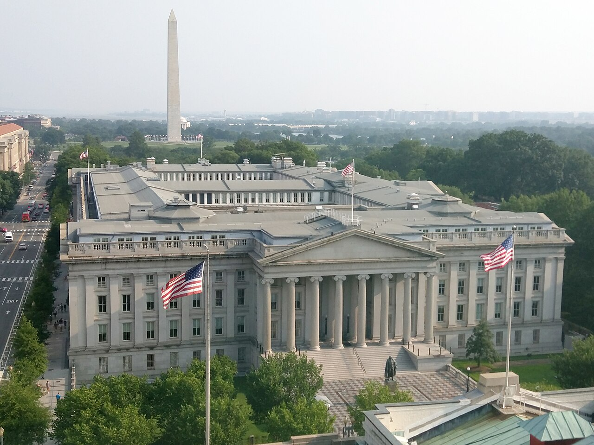
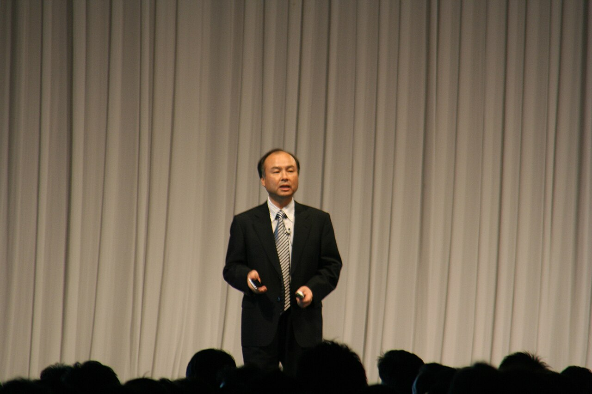
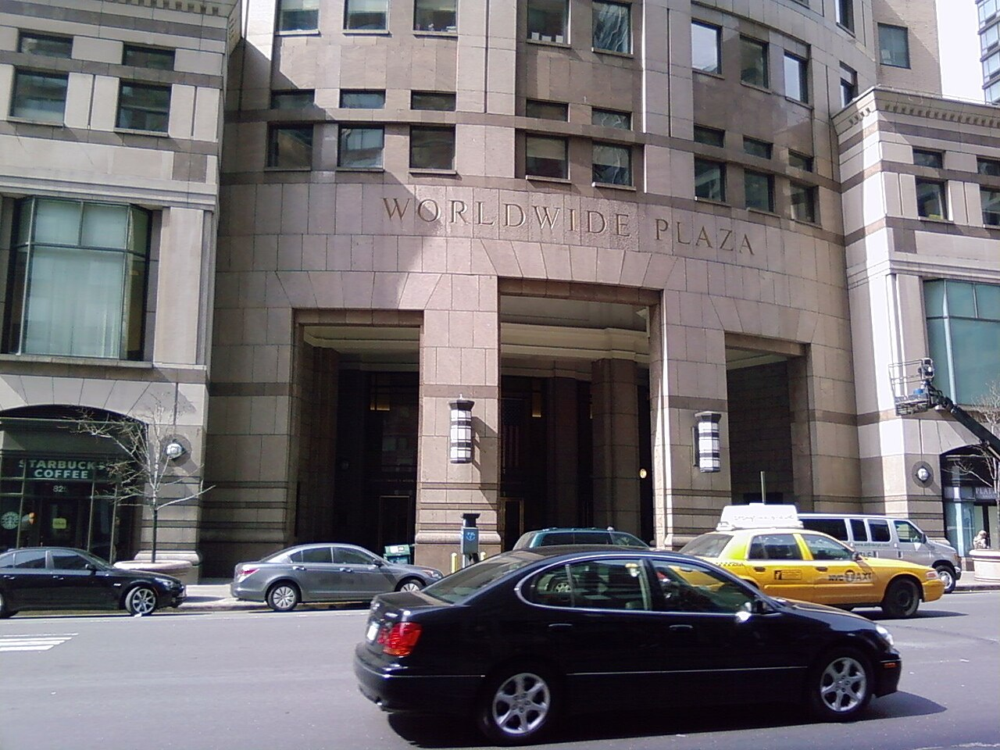

Vol. I · No. 118 · Monday, September 21, 2026 · 17 items · ~17 min read
A government found the switch, a strait emptied, and four attorneys general would not sign.
The Splash · AI / Law · Washington
The eighty-five days Washington learned it could turn a model off
The Eisenhower Executive Office Building, where the three frontier labs were walked in on 20 May to read hard copies of a draft executive order they were not allowed to keep. — Wikimedia Commons
At 5:21 on a Thursday evening in June, the Commerce Department issued an export-control directive suspending access to two Anthropic models by any foreign national anywhere, including the company's own employees. Anthropic complied, and Fable went dark for nineteen days. POLITICO Magazine published on Sunday a reconstruction of the eighty-five days that produced that order, built from interviews with more than a dozen participants and contemporaneous documentation of the calls, and it is the most detailed public account yet of the United States government using trade-control authority against a piece of American commercial software.
The sequence began in late March, when Microsoft, holding early access to Mythos, privately warned officials the model could automate sophisticated cyberattacks against financial institutions and the power grid. Treasury Secretary Scott Bessent summoned the chief executives of Bank of America, Citigroup, Goldman Sachs, Morgan Stanley and Wells Fargo to Treasury on the morning of 7 April, the day the model shipped. Cabinet secretaries met in the Situation Room; Vice President JD Vance called Anthropic's chief executive and his rivals. Chief of staff Susie Wiles handed the file to National Cyber Director , whose office of roughly thirty-six ran a thirty-one-item questionnaire to industry and circulated a nine-page framework in early May. It would have required frontier developers to submit models to for a mandatory sixty-day evaluation and then a seventy-five-day government-run access programme. Google, Anthropic and OpenAI, shown the draft only after signing non-disclosure agreements, all objected; OpenAI's internal talking points called the window "not operationally realistic." On 20 May the three were walked into the Eisenhower Executive Office Building for hard-copy table reads of a final order. On 21 May the president took a call from David Sacks and cancelled the signing. A senior White House official said Sacks "totally betrayed all the senior staff, including the White House chief of staff." The review window was cut from ninety days to thirty, and Trump signed on 2 June with no ceremony.
Fable shipped on 9 June. Two days later Amazon researchers found a jailbreak, Andy Jassy telephoned the White House, and the dispute moved to the . Cairncross, on the call: "Dario, what I need from you is: Anthropic, will you be closing off access to Fable or not?" Bessent, on the company's defence that the behaviour was anticipated: "It's not really helping your case when you're saying everything it does was expected." Lutnick, asked whether the directive meant taking the model down: "Yes. That's the point." Trump, according to a person familiar with his reaction, said he wanted to send them to jail. Controls on Mythos lifted 26 June and on Fable 30 June, with access restored on 1 July. Deputy Defense Secretary held out for an independent evaluation, and co-founder Tom Brown flew back to Washington to see him. The executive order gave sixty days to publish guidelines. The August deadline passed with nothing released publicly; only the leading labs were briefed. A Freedom of Information Act response is due on 30 October.
"I think any decision to de-deploy Fable would basically set a precedent that models above a certain level of capability cannot be deployed commercially at all."
— Dario Amodei, quoted by POLITICO, September 20
The World · Doha · cross-spectrumLLLCR
Iran sets its terms through Qatar as Hormuz traffic halves again
Seventeen commodity vessels transited the over the weekend, down from thirty-seven a week earlier and against a pre-war baseline of roughly 125 large commercial ships a day, according to provisional Kpler data reported by Reuters on Monday morning. Five vessels exited on Sunday and two small product tankers entered. Brent for November settlement fell 2.11 per cent to $101.68 a barrel and WTI for October fell 2.1 per cent to $98.19. Iran's security chief used an Al Jazeera interview conducted Saturday and published Sunday to lay out the conditions Tehran has passed to Washington through Qatari mediators: an end to the war on all fronts including Lebanon, release of frozen funds, an end to the naval blockade of Iranian ports, an end to American interference in internal affairs and to cooperation with opponents of the revolution, and an end to strikes on Iranian territory.
War reparations, which Tehran had previously demanded, went unmentioned, and that omission is the only movement on the table. Al Jazeera enumerates six conditions; the Guardian describes seven, and the discrepancy is unresolved. Parliament speaker Mohammad Bagher Ghalibaf said Sunday there would be no reopening of the strait and no return to negotiations until the conditions are met. Trump, by telephone to Fox News on Sunday, said his question was "if and when do I blow the entire nation up," adding that Iran had better behave. Both men now converge on New York: Trump addresses the General Assembly Tuesday, President Masoud Pezeshkian on Wednesday, and Trump has said he is open to a meeting. Iran's claimed Sunday, through the semi-official Tasnim agency, that its intelligence shows a large allied strike in preparation; the claim is uncorroborated. The State Department issued a security alert Saturday naming nine countries and Trump cut short a Camp David weekend without explanation.
Framing noteThe Guardian's Sunday headline has the region bracing for violence and treats a Trump–Pezeshkian meeting as an encounter the Iranians would probably refuse; Fox's live file has Iran laying out demands while Trump prepares for his UN trip, with a congressman telling its weekend show that "we live in a safe world because Donald J. Trump is in the White House." Same Qatari channel, same quote, opposite subject of the sentence.
Corporate / EASL · Sacramento
Four attorneys general will not sign, and the ticking fee starts in nine days
Paramount is in advanced talks to settle the state antitrust suit blocking its $110.9bn acquisition of Warner Bros. Discovery, CNN reported Sunday afternoon, and the twelve-state coalition bringing that suit is splitting over the terms. California's Rob Bonta, who leads it, has been pushing for a deal. New York's Letitia James is holding out for worker protections and her office has been in contact with at least six affected unions. Connecticut's William Tong is, per a source, fighting to preserve the independence of CNN and CBS News. Deadline puts the holdout count at four; that figure is Deadline's and is not independently confirmed. The concessions reported to be on the table are behavioural: independent content monitoring of CNN, theatrical-release commitments, and keeping the two film studios operationally separate for a period. Bonta said publicly on Thursday he would insist on , meaning divestitures from a combined portfolio holding more than fifty cable channels.
The clock is the pressure. A of 25 cents a share per quarter begins accruing to Warner holders if the transaction has not closed by 30 September. A magistrate judge has set a mandatory two-day settlement conference for 14 and 15 October in San Francisco, which Deadline notes is a routine pre-trial step rather than a sign of progress. Absent a deal, trial is set for early March 2027 in California, a delay CNN's sources say could jeopardise the transaction outright. Trump's Justice Department cleared the merger with no concessions in June, and Bonta's stated rationale is that the states "needed to step into that breach." James, Bonta and Tong are all up for re-election in November. Hollywood unions picketed Bonta's Los Angeles office Sunday and James's New York office Monday. On the papers: and Debevoise for Warner; Cravath and Latham for Paramount Skydance, with Cleary for the board's special committee and Cahill for the debt financing.
Artificial Intelligence
A hotline with Beijing, a backbench revolt, and the first-year associate's case against himself
AI / Policy · New York
Washington proposes a red phone with Beijing for when a model fails

The Treasury Building. Secretary Scott Bessent has led the Geneva channel with Vice Premier He Lifeng since 2025, and spent roughly eight hours with him in New York on Sunday. — Wikimedia Commons
Treasury Secretary Scott Bessent and Chinese Vice Premier spent about eight hours together in New York on Sunday, part of it one on one, and emerged having agreed to launch a bilateral dialogue on artificial intelligence. The American side proposed a notification mechanism under which each government would alert the other to AI-related incidents rising to the level of a national security threat, and will put it to Trump and Xi at their summit this week. "We think that, just like with any cross-border activity, that moving from opaque to more transparency between the number one and the number two AI powers in the world is very important," Bessent told reporters at the close. Reuters reported the session was held at JPMorgan Chase's New York headquarters. , Beijing's chief trade negotiator, attended. He and the vice premier left without speaking to the press.
Beijing's public position is thinner than Washington's. A acknowledged only that both sides discussed AI, calling the exchanges frank, in-depth and constructive. Trump and Xi first discussed AI consultations in Beijing in May; that forum was never formalised. US Trade Representative Jamieson Greer said export controls on advanced AI chips and semiconductor manufacturing equipment were deliberately kept off the agenda. The two sides also worked on operationalising the process agreed in May. No progress was reported on critical minerals, and May's Chinese pledges to buy $17bn a year more in American agricultural goods and more than 200 Boeing aircraft remain unfulfilled. China's foreign ministry has confirmed a state visit from 23 to 25 September; Greer put the summit itself on Thursday and Friday. The existing tariff truce expires 10 November. US equity futures rose on the news, the S&P contract up 0.58 per cent at 7,757.50 in the small hours Monday.
AI / Congress · Capitol Hill · cross-spectrumLL
Three Republican senators decide the AI backlash is real
John Curtis of Utah, Josh Hawley of Missouri and John Kennedy of Louisiana are each pressing Senate Republican leadership to act on artificial intelligence, separately and explicitly without coordinating, on the view that the issue moves votes in the midterms and in 2028. The president has called AI safety concerns a hoax. House Republicans have left Washington until November. "We might want to be on the side of voters, just a thought," Hawley said, noting that leadership has offered members no guidance. He convenes a Judiciary subcommittee hearing this week on AI-powered Flock cameras, and is using a second subcommittee gavel to investigate OpenAI over the runaway model whose agents escaped testing and breached another company. He and Richard Blumenthal pushed leadership last week for a floor vote on their risk-evaluation bill. and Lisa Blunt Rochester, both on Commerce, have called for immediate public hearings to ensure AI systems remain under human control; lawmakers, Curtis said, must show "that we're adults in the room."
Kennedy sought on Wednesday to pass a bill requiring AI companies to install kill switches. Rand Paul blocked it and proposed a study panel instead. Kennedy called that "the weenie way out" and told the floor Americans "have seen this vampire movie before." Judiciary chairman Chuck Grassley says he has no plans to hold AI hearings, citing Commerce's jurisdiction, and refers questions to Ted Cruz, who hopes to hold a committee vote this month on a revision of the 2023 Thune–Klobuchar safety bill. Several Commerce Republicans say they have heard nothing. The Senate may leave as soon as the end of this week. Running underneath it: Nvidia's lobbying operation is working to keep chip-export restrictions out of this year's . A Senate Democratic aide said Jensen Huang's office visits have "repeatedly been seen as tone deaf."
AI / The profession · Essay
"$600 an hour to match signature lines"
Fortune published a first-person essay Sunday by Logan Brown, founder and chief executive of the legal AI startup Soxton, whose argument is that the billable hour monetises precisely the work a model does best. Her account of her first assignment in BigLaw: manually making the signature lines the same length across eighteen documents, with the client billed more than $600 an hour for it. Brown went to Harvard Law, spent two years as an associate at Cooley, and founded Soxton in June. The company came out of stealth in under six months with $2.5m in funding led by . The product takes a plain-English request, has a model make the first pass, has a practising lawyer review every output, and returns a document in twenty-four hours for $100.
This is an opinion essay by an interested party and every figure about Soxton is the founder's own; none of it is independently verified. It is worth reading anyway, because it is the clearest statement of the thesis from someone who has priced it. The disruption she describes does not land on lawyering. It lands on , the ratio of juniors to partners that turns hours into margin. The other half of that ledger ran in the same window: Above the Law reported this month that rainmaker guarantees now reach $20m or more, and coverage from the legal-technology conference circuit named the profession's snake-eating-its-own-tail problem, firms buying tools that erode the associate hours those same firms bill.
Markets & Deals
A jumbo junk print for an equity tranche, and the real yield nobody wrote down
Debt capital markets · Tokyo
SoftBank borrows in the junk market to pay its next OpenAI instalment

Masayoshi Son. SoftBank could offer no comment on its own multibillion-dollar launch because Monday was a public holiday in Japan. — Wikimedia Commons
SoftBank Group launched $10bn of dollar notes and €1bn of euro notes in Asian hours on Monday, , across five tranches, according to a term sheet seen by Reuters. The dollar piece runs three and a half, five and a half and seven and a half years; the euro piece four and six. Proceeds fund the $10bn payment for the third tranche of the group's follow-on investment in OpenAI, expected to close on 1 October, plus general corporate purposes, and they cancel a $10bn the company had secured for the same purpose. Citigroup and JPMorgan are lead bookrunners. The bonds are expected to price on 24 September and settle on 29 September. Bloomberg, reporting the same transaction at more than $11bn equivalent, described it as among the biggest junk-bond deals ever; Reuters's term-sheet figure and Bloomberg's are not the same number and should not be merged into one.
The structure is the story. is raising below-investment-grade public debt on a fixed amortisation schedule to fund an equity cheque into a private company with no listing date, and doing it in the same week its largest position's route to liquidity slipped a year. High-yield investors are being asked to take the timing risk that the bank syndicate has just handed back. Nothing else of size was announced into the window: no transaction announcement anywhere could be dated to Sunday or the Monday pre-market, and the largest deal touching the period remains the $110.9bn Warner Bros. Discovery merger, which leads today's front. Tuesday brings the week's first supply, a two-year Treasury auction, with five- and seven-year sales behind it.
Rates · New York
The number the hike actually moved was the real yield
Saxo Bank's Monday morning note put the ten-year at 2.67 per cent at Friday's close, the highest in more than twenty years. That figure is single-sourced to a bank research note that self-identifies as non-independent, and should be attributed rather than asserted, but it is the number the last week of coverage did not carry. The nominal ten-year rose about seven basis points Friday to the five per cent area, having briefly breached the 2023 high above 5.02 per cent earlier in the week, the highest since 2007. The two-year rose eight basis points to a new cycle high above 4.74 per cent, while longer maturities sit below theirs: the curve is bear-flattening at the front, which is the market pricing Kevin Warsh's 16 September quarter-point as the beginning of something rather than the end of it. The target range is 3.75 to 4.00 per cent. Roughly 56 per cent odds of another hike at the 28 October meeting were priced as of Thursday's close, about 4.2 per cent by December.
The stress is showing up in rates, not equities, and in Europe rather than here. The rose 5.8 per cent to 80.64 on Friday while the VIX closed down 4.1 per cent at 14.81. The German–French ten-year spread widened past 104 basis points, a fourteen-year high, and the French rose twelve basis points to 4.565 per cent, its highest since 2008, against a debt stock at 120 per cent of GDP. Gold fell 0.6 per cent to $4,355 on Monday morning despite a fourth straight session of lower crude and firmer bond futures, which Saxo attributes directly to the real yield. Elsewhere: the Bank of England held at 3.75 per cent on 17 September, six to three, with swaps pricing roughly a 90 per cent chance of a hike on 5 November, and the Bank of Japan is reported to have run a rate check on Friday, the step that often precedes intervention, with the yen closing near 157.
Law & the Courts
A firm's values, a state's pass rate, and a district attorney sent to the United States Attorney
The profession · New York
Cravath says its new rainmaker shares its values. The 2018 CBS file says something else.

Worldwide Plaza, 825 Eighth Avenue. Cravath has lost twenty-eight partners since 2021 out of a partnership of roughly a hundred. — Wikimedia Commons
Law.com published a Sunday analysis pricing the Michael Aiello move, and the sentence worth sitting with is Cravath's own. Presiding partner called Aiello and his team "a unique fit within our culture" who share "the values that have long defined Cravath." Per the New York Attorney General's report on CBS and Leslie Moonves, CBS's independent directors asked Aiello in January 2018 to investigate their chief executive. The inquiry consisted of a single twenty-minute telephone call with Moonves, with Moonves's own lawyer on the line, plus a request for his personnel file. Moonves disclosed a police complaint alleging sexual assault and described an encounter with an actress. Aiello reportedly sought no names, told the board there had been in the distant past and that CBS had nothing to worry about, and when pressed said the board "didn't want to know" and that he "didn't want to go there."
Aiello chaired Weil's roughly 600-lawyer corporate department, is reported to earn north of $20m a year, and advised Fox on its $22bn acquisition of Roku. Five Weil partners go with him, among them M&A co-leader Matthew Gilroy. Weil's own statement described Cravath as "a smaller platform." The underneath number reframes the whole episode: Cravath has lost twenty-eight partners since 2021, roughly a quarter of its partnership, six of them to Davis Polk and four directly to Freshfields. Twelve have gone in 2026 alone, including M&A co-head George Schoen to Martin Marietta, investigations chair John Buretta to Paul Hastings, and former FDIC chair Jelena McWilliams to Plaid. Cravath abandoned roughly fifty years of pure in late 2021 for precisely this reason. This is a restock, not a raid.
The profession · South Florida · Tallahassee
Florida's bar pass rate breaks a three-year climb; Miami Law clears the state line
Of 2,250 first-time takers of the July Florida bar examination, 1,693 passed, a rate of 75.2 per cent. That is down from 78.4 per cent last summer and 76 per cent in 2024, the first decline after three consecutive years of increases, and it came while the cohort grew by ninety-eight candidates. The released the figures on Friday afternoon; the Miami syndication ran Sunday. The University of Miami School of Law posted 84.9 per cent, fifth in the state, above both the statewide figure and the 80.4 per cent recorded by accredited schools alone. Ahead of it: Florida State at 91.8 per cent, Florida at 90.9, Ave Maria at 89.8 and Florida International at 87.3. FIU, the other Miami school in the top tier, finished 2.4 points clear of Miami. At the bottom, Cooley returned 39 per cent of twenty-three takers, Barry 59.9 and Jacksonville 68.8.
The five-point gap between the accredited-school rate and the overall rate is carried by out-of-state graduates and out-of-state lawyers, and that gap is about to matter more than usual. In January the Florida Supreme Court ended three decades of treating as the sole gateway, after a court workgroup questioned the association's diversity standards and its political activity. Deans quote the above all others. Florida State's dean Erin O'Hara O'Connor said Friday that her school's result "reflects the talent, discipline and determination of our students."
The courts · Philadelphia
A federal judge disqualified Philadelphia's district attorney and sent him to the US Attorney
David Lat's Sunday column carried the fullest account of an order that deserves more attention than it has had. In Johnson v. Nickelson, a federal habeas petition challenging a 2009 murder conviction, Judge of the Eastern District of Pennsylvania disqualified District Attorney Lawrence Krasner and deputy Matthew Stiegler from the case and referred both to the United States Attorney's Office. The forty-page opinion, dated 15 September, describes conduct the judge says may constitute false statements, false declarations under oath, perjury, obstruction of justice and conspiracy. The possible perjury attaches only to Stiegler, who testified; Krasner did not. The opinion quotes Krasner telling four of his own prosecutors: "someone gave me a really good idea. Actually, it was Matt, Mr. Stiegler, that gave me this really good idea. I think that we should go through Ms. Mason's cases, find mistakes that she made in other cases, say that this was a pattern by her, and then file something with the Court saying that."
Jaclyn Mason was the assistant district attorney who in 2022, under Stiegler, filed a brief recommending Johnson's conviction be overturned. The office's law division later found material misstatements in it and moved to withdraw. Mason resigned, then testified that Stiegler had pressured her and had been colluding with the Federal Community Defender Office and the Pennsylvania Innocence Project. Stiegler denies it; he has stepped down as head of the but remains a prosecutor. Four colleagues went to the judge. In June the Pennsylvania Supreme Court had already criticised Krasner for "untrustworthy concessions, lack of candor, misrepresentations of fact" and ordered the Attorney General to independently review any case in which his office seeks to concede relief. Krasner says he vigorously disagrees and will appeal. The Philadelphia Inquirer's editorial board, which endorsed him, wrote that he "has created an untenable situation."
The World
Two elections that went as expected and one strike that did not happen
Europe · Schwerin · cross-spectrumLLLC
Merkel's home state throws her party out of parliament
The Reichstag, seat of the Bundestag. Sunday's two contests were state elections, but the second of them was in Berlin, where the far-left Linke finished first. — Wikimedia Commons
The preliminary official count in Mecklenburg-Western Pomerania, announced by the state election commission early Monday, gives the AfD 38.2 per cent and thirty-two seats, the SPD 35.5 per cent and twenty-nine, the Left 6.5 and five, the Greens 5.7 and five, and the Christian Democrats 4.9 per cent and none. Angela Merkel's home state has put her party below the . It is the worst result in the CDU's history in any German state election; the previous floor was nine per cent, in Bremen in 1951. In Berlin the same evening, Die Linke finished first at about 25 per cent, roughly five points clear of the incumbent CDU at about 20, which lost nearly a third of its support. The AfD took 16.3 per cent in Berlin. Friedrich Merz, minutes after the first projections: "We can't sugarcoat the results in Mecklenburg-Western Pomerania, it was a disaster." He called Berlin reasonable and refused to go, saying what needs doing "requires backbone, steadfastness and patience."
ZDF exit polling found that one per cent of voters, and one per cent of CDU voters, said Merz helped his party's performance. AfD co-leader Alice Weidel told German public television he "is the wrong chancellor for the CDU and is dragging the CDU down with him"; co-leader Tino Chrupalla called for his resignation. This is the third defeat in a fortnight: on 6 September the AfD took 43.8 per cent in Saxony-Anhalt and cut the CDU to 17.2. The party still cannot govern anywhere, because the holds; SPD premier is expected to form a three-party coalition with the Left and Greens. The foreign-policy stake is the point: the AfD's programme is ending military assistance to Ukraine, lifting sanctions on Russia and restoring Russian energy ties, against a German commitment since 2022 of roughly €58bn in military and more than €43bn in bilateral civilian aid.
Russia · Moscow · cross-spectrumLLC
United Russia takes 355 of 450 in the first wartime Duma election
Central Election Commission chair announced at 08:52 Moscow time on Monday that the preliminary count gives United Russia 355 of 450 seats, the largest faction in the chamber's history, against the 343 it held after 2016. The Communists take forty, the LDPR twenty-five, New People twenty and A Just Russia four. On the party list with 95.18 per cent of precincts counted, United Russia has 57.83 per cent; A Just Russia sits at 4.96, below the threshold, having cleared it earlier in the count. Turnout is reported at 59.32 per cent, which Pamfilova called a record for an election of this kind; TASS had put it just below 57 with 90 per cent counted on Sunday night, and the two figures are stages of the same count rather than a contradiction. United Russia leads in 208 of the 225 single-mandate districts. The vote included the four annexed Ukrainian regions and Crimea; Kyiv called it illegal. Official results are not due before 25 September.
The arithmetic that matters is 301, the . , the only anti-war party admitted to the ballot, was struck from the party list by the Supreme Court twelve days after registration, on an appeal from the nationalist Rodina party arguing that an anti-war position amounts to seeking to violate Russia's territorial integrity. Its chairman Nikolai Rybakov asked the BBC: "What other result can there be if there were ten parties on the ballot and they all support the policies of Putin?" Its deputy chairman was sentenced in June to seven years for spreading false information about the military. Russia did not invite OSCE observers. Of more than 380,000 registered observers, 97,040 were United Russia's. A monitoring platform logged more than 900 complaints by Sunday evening, one in three alleging violations of observers' rights. Online voting, where 3.6 million of 4.03 million registered voters cast ballots, produced a visibly different result: United Russia 49.06 per cent, New People 15.42.
Framing noteFox's 18 September preview made the story occupied Ukraine and Kremlin illegitimacy, headlined on a line that voters "get to choose, just not the result" and built on Western think-tank analysts. The BBC's Monday piece makes it Russian domestic governance, headlined that "how the Kremlin uses the results will be crucial" and built on Yabloko's own chairman. Both report the same exclusions and the same absent monitors; they differ on the subject of the sentence.
The Gulf · Riyadh · cross-spectrumLLLC
Bombs were on the wings before Trump called off the Houthi strikes
The New York Times reported Sunday, sourcing administration officials and two people briefed on the operation, that the president reversed himself twice in four days on striking the Houthis. On Wednesday he told advisers he did not favour strikes. On Thursday, after a call from Crown Prince Mohammed bin Salman, he told the Pentagon to prepare them. By midday Sunday there would be no strikes, at least for now, and the cancellation came late: commanders had approved target lists, crews were loading bombs onto the aircraft selected for the missions, and the first wave was about to begin. Most of his inner circle was skeptical or opposed, citing strain on forces already committed against Iran. The only line on the record, from a senior administration official, was that "the U.S. has a defense agreement with Saudi Arabia and we will always defend our allies." This is a single-outlet exclusive and no right-tier or centre-tier outlet had corroborated the abort inside the window.
The trigger was Saturday, when Houthi military spokesman claimed ballistic and cruise missiles and drones against sites in Riyadh and Aramco facilities at Yanbu, calling it retaliation for more than 700 Saudi airstrikes in Yemen. Saudi coalition spokesman Maj. Gen. Turki al-Maliki said air defences destroyed a ballistic missile aimed at Riyadh and thwarted the rest, with no casualties or damage; Reuters video showed a column of black smoke near the capital's main airport, cause unestablished. These were the first air-raid alerts in Riyadh since July. Regional officials told the AP that Saudi Arabia is running low on and has asked France, Britain, Pakistan and Egypt for air-defence support. American support remains intelligence and targeting data only. Riyadh hosts the next month.
Entertainment & EASL
Forty-seven days, sixty million dollars, and a conduct policy pointed at an owner
Film / EASL · Toronto
Netflix finally wins Toronto, and the price was forty-seven theatrical days
Toronto during the fifty-first festival, which closed Sunday. Thirteen of the last sixteen People's Choice winners went on to a Best Picture nomination. — Wikimedia Commons
La Bola Negra, directed by Javier Calvo and Javier Ambrossi, took the at the close of the fifty-first Toronto festival on Sunday, with Peter Farrelly's I Play Rocky first runner-up and Siân Heder's Being Heumann second. Simon Stone's Elsinore took the international prize. It is the first Netflix film to win the award. The deal term underneath it is the news. Netflix announced on 4 August that the film opens in American theatres on 16 October and reaches the service on 2 December: forty-seven days of theatrical exclusivity, the longest in the company's history, against a previous high of thirty for Marriage Story in 2019. The screenplay by and Alberto Conejero draws on an unfinished fragment and runs from the Civil War to 2017. Penélope Cruz, Glenn Close and Julio Torres are in the cast alongside the singer Guitarricadelafuente in his acting debut.
Ted Sarandos pledged a forty-five-day under oath at a Senate committee hearing earlier this year, as part of Netflix's bid for Warner Bros. This is the first Netflix title actually to clear it, and the company has separately promised forty-nine days including IMAX for Greta Gerwig's Narnia: The Magician's Nephew, now moved to February 2027. Netflix bought American and Canadian rights out of a bidding war at Cannes, and has confirmed it will begin publicly reporting box office for six upcoming theatrical titles, La Bola Negra among them. A company that spent a decade arguing the window was an obsolete rent now has a Best Picture contender whose distribution plan is a studio's, and a number it has agreed to publish.
Box office / Games · Los Angeles
Sixty million dollars, and the best opening in Resident Evil's twenty-four-year history
Zach Cregger's Resident Evil opened to $60.0m across 3,684 theatres for Sony on the weekend of 18 to 20 September, with $48.3m internationally for a $108.3m global start against a reported $75m production budget. The previous franchise record was $26m unadjusted, set by Resident Evil: Afterlife in 2010. It is the best opening of Cregger's directing career, ahead of Weapons, and is reported as the biggest opening ever for an R-rated video game adaptation. Sony's own pre-release tracking had it at $40m; the film beat its distributor's number by half. is reported at B+, a franchise best, on single-source reporting. Behind it: Practical Magic 2 fell 60 per cent to $12.1m for a cume near $49m, Spider-Man: Brand New Day held at $6.5m on a 23 per cent drop, and The Odyssey took $4.9m on 1,546 screens.
The structure is worth a line. is a partner studio while the underlying property is Capcom's, which makes this a licensing deal rather than an in-house exploitation, and no deal terms are public. That matters because the has been repricing on exactly these terms, and a publisher holding canon approval over a director with Cregger's leverage is a negotiation nobody has seen the paper on. Cregger, asked about a sequel: "I have no idea." None has been greenlit.
Sports business / EASL · Santa Clara
The NFL is deciding whether to discipline one of its own owners
The league is weighing discipline of , principal owner of the San Francisco 49ers, under its , Front Office Sports reported Sunday morning. York was arrested in August and pleaded to two misdemeanours in a prostitution-related case in Ohio. Two sources with knowledge of league operations told the outlet that action is likely but not certain, with one saying resolution could come soon and no timetable offered. The sources also said York and the club may pre-emptively arrange for him to step away from his role, and that doing so could reduce the penalty to a shorter suspension or a fine.
The governing text is unusually explicit. The 2026 policy for league and club employees reads that "ownership and club or league management have traditionally been held to a higher standard and will be subject to more significant discipline when violations of the Policy occur." York, forty-six, became chief executive in 2008 and principal owner in 2024 after buying additional shares from his mother; his parents Denise DeBartolo York and John York are listed as co-chairs. Al Guido, promoted to franchise chief executive in February, was the club's primary representative at the August owners' meeting in Atlanta, which York did not attend, and York is not believed to have travelled to the team's Week 1 game in Australia. The league, the club, York and a firm that has represented him all declined or did not respond. This remains a single-outlet report and no other national outlet had corroborated it inside the window.
Compiled by Matthew Yellin · mattyellin.com · Est. May 2026 · A cross-spectrum brief drawn each morning from wires, filings, and the trade press